# Reference
https://www.bilibili.com/video/BV1GJ411Y7ua
# Windows 逆向工程入门指南
对小白指了条路。
# 思维导图截图
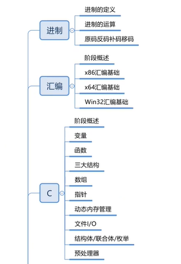
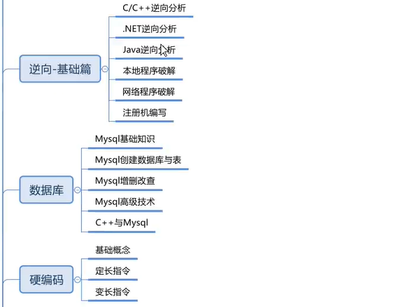
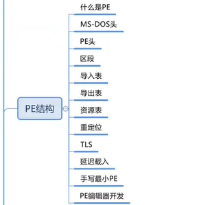
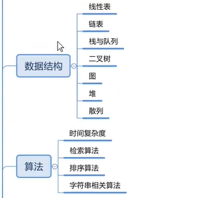
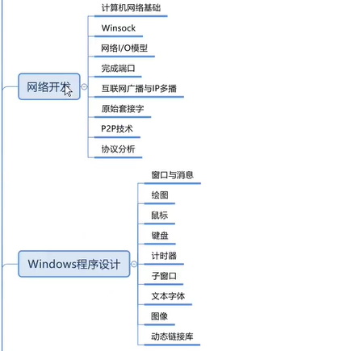
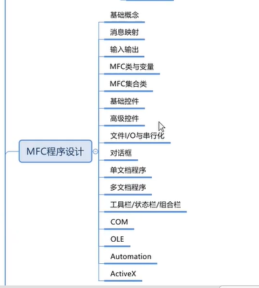
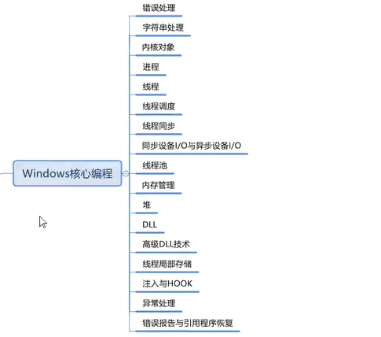
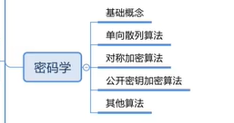
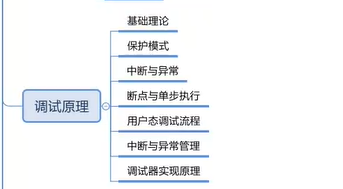
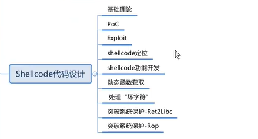
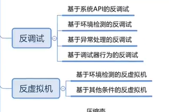
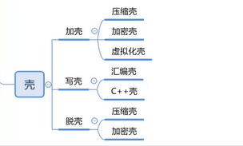
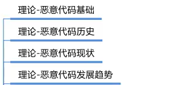
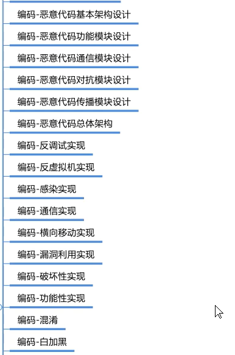
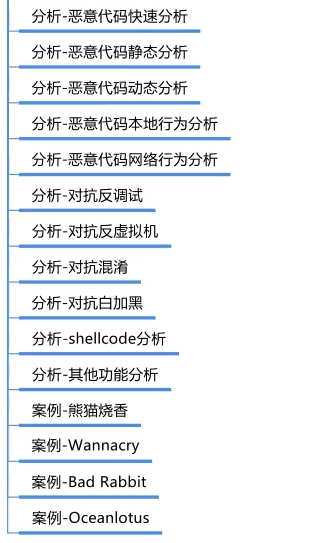
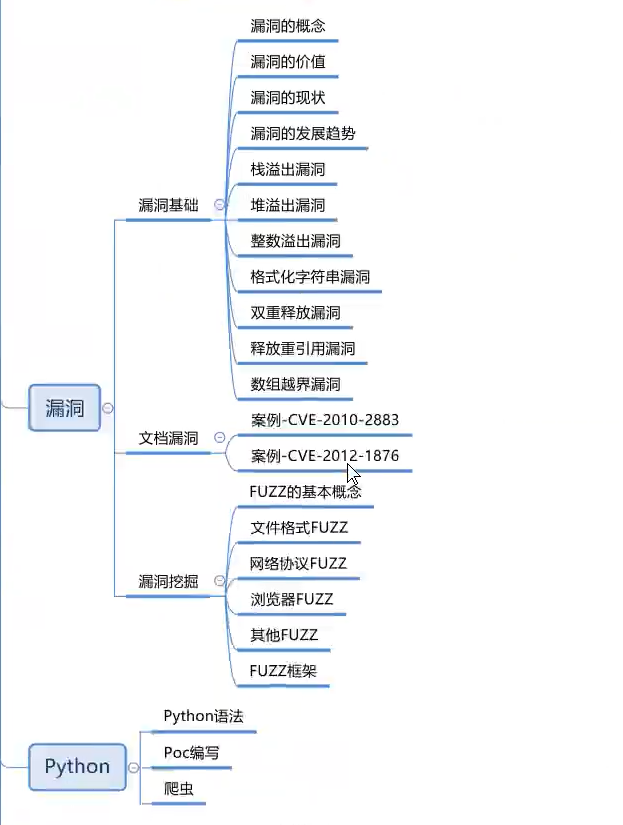
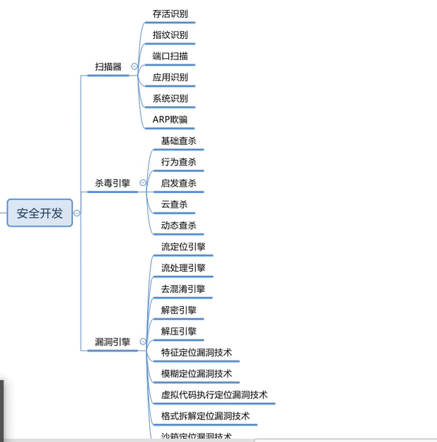
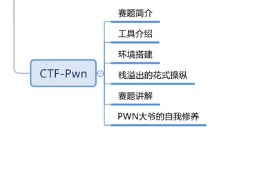
# 推荐书籍
Windows 程序设计
Windows 核心编程
MFC 程序设计
算法导论
Windows 环境下 32 位汇编语言程序设计
《x86_x64 体系探索及编程》
taocp 计算机程序设计艺术
算法竞赛
大话数据结构
PE 权威指南
逆向工程权威指南 【内容杂，不适合入门】
软件调试 【张银奎】
Windows 高级调试
深入浅出密码学
0day 安全：软件漏洞分析技术 【学习 shellcode 的编写】
灰帽黑客【学习 shellcode 编写】
恶意代码分析【学习反调试和反虚拟机技术】
加密与解密第四版【学习加壳、脱壳技术】
恶意代码分析【病毒分析、恶意代码入门】
0day 安全：软件漏洞分析技术【学习漏洞相关技术】
漏洞战争
模糊测试 强制发掘安全漏洞的利器
Windows 内核原理与实现【看完 Windows 内核安全与驱动开发，缺一些理论，需要看这本书】
深入理解 Windows 操作系统【也是理论。原版最好，中文翻译有些问题】
搞挂
1.Windows 内核安全与驱动开发【安全开发对抗】
2.Windows 内核原理与实现【着急做挂的话，这本可以不看】
3.Windows 内核设计思想【搞挂的要看这本书】
虫术 【Python 爬虫】
# 一些靠谱的招聘网站
看雪论坛
吾爱破解
FreeBuf
Boss 直聘
智联招聘
Tools
安全圈 info